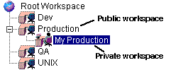

Serena ChangeMan Version Manager creates a default public workspace, called the Root Workspace, when a project database is created and sets the Root Workspace as the current workspace. The settings that are initially defined in the Root Workspace are:
One setting that is not initially defined is default promotion group, which is valid only if a promotion model is in effect. Default promotion group is a lowest-level promotion group of a promotion model; by default, Version Manager associates the default promotion group you specify with revisions when checking out revisions, locking revisions, and adding workfiles. By defining a default promotion group, you eliminate the need for a user to specify which lowest-level promotion group to use for these actions.
Your ability to change the settings of the Root Workspace is dependent on the privileges assigned to you by your Administrator. The Root Workspace cannot be deleted or renamed. Only one workspace defined for a project database can be named Root Workspace.

When you add projects to a project database, Version Manager adds workspace settings for each of the projects to the Root Workspace definition.
Anyone using the Root Workspace will be affected by changes made to it. For this reason, using public and private workspaces is highly recommended when multiple users are accessing the same project database. Typically, the Administrator will create several public workspaces to define the work environments of specific functional groups, such as Dev, Production, and QA. From a public workspace, you can create a private workspace for working on a local drive.
| About Workspaces | Understanding Workspace Hierarchies |
| About Public and Private Workspaces | Creating and Managing Multiple Public Workspaces |
| Creating Workspaces | Setting Your Workspace |